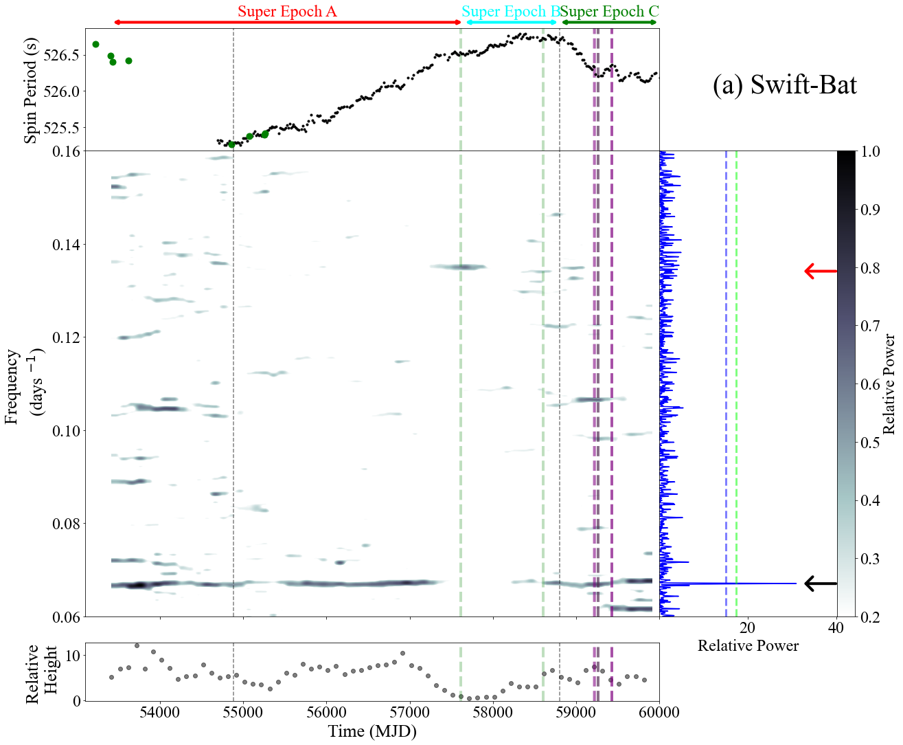

Welcome! I'm an astrophysicist and a data scientist focused on astrophysics, data analysis, and building tools for high-energy astronomy and beyond. On this page, you'll find information about me and my doctoral research, code snippets and interesting visualizations I've created along my journey. Any and all data/code is available upon request.
I am currently focused on high-energy astrophysical phenomena as it pertains to compact objects (black holes, neutron stars, etc.). These classically "hard-to-detect" systems have been found to be observed in the X-rays and gamma-rays if certain conditions are met, namely: the presence of a binary companion and its interaction with the compact objects (accretion, stellar wind, etc.).
I've written and contributed to multiple peer-reviewed publications which can be found below:
Interactive graphics and animated figures from my astrophysics research.

GitHub: @aplangrangian
Email: alexlange@gwu.edu